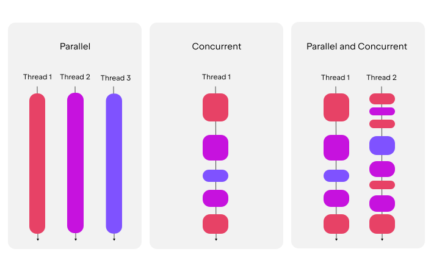

To create applications that perform multiple tasks at once, a concept known as concurrency, Kotlin uses coroutines. A coroutine is a suspendable computation that lets you write concurrent code in a clear, sequential style. Coroutines can run concurrently with other coroutines and potentially in parallel.
On the JVM and in Kotlin/Native, all concurrent code, such as coroutines, runs on threads, managed by the operating system. Coroutines can suspend their execution instead of blocking a thread. This allows one coroutine to suspend while waiting for some data to arrive and another coroutine to run on the same thread, ensuring effective resource utilization.

For more information about the differences between coroutines and threads, see Comparing coroutines and JVM threads.
Suspending functions
The most basic building block of coroutines is the suspending function. It allows a running operation to pause and resume later without affecting the structure of your code.
To declare a suspending function, use the suspend keyword:
suspend fun greet() {
println("Hello world from a suspending function")
}You can only call a suspending function from another suspending function. To call suspending functions at the entry point of a Kotlin application, mark the main() function with the suspend keyword:
suspend fun main() {
showUserInfo()
}
suspend fun showUserInfo() {
println("Loading user...")
greet()
println("User: John Smith")
}
suspend fun greet() {
println("Hello world from a suspending function")
}This example doesn't use concurrency yet, but by marking the functions with the suspend keyword, you allow them to call other suspending functions and run concurrent code inside.
While the suspend keyword is part of the core Kotlin language, most coroutine features are available through the kotlinx.coroutines library.
Add the kotlinx.coroutines library to your project
To include the kotlinx.coroutines library in your project, add the corresponding dependency configuration based on your build tool:
Kotlin
// build.gradle.kts
repositories {
mavenCentral()
}
dependencies {
implementation("org.jetbrains.kotlinx:kotlinx-coroutines-core:1.11.0")
}Groovy
// build.gradle
repositories {
mavenCentral()
}
dependencies {
implementation 'org.jetbrains.kotlinx:kotlinx-coroutines-core:1.11.0'
}Maven
<!-- pom.xml -->
<project>
<dependencies>
<dependency>
<groupId>org.jetbrains.kotlinx</groupId>
<artifactId>kotlinx-coroutines-core</artifactId>
<version>1.11.0</version>
</dependency>
</dependencies>
...
</project>Create your first coroutines
To create a coroutine in Kotlin, you need the following:
A coroutine scope in which it can run, for example inside the
withContext()function.A coroutine builder like
CoroutineScope.launch()to start it.A dispatcher to control which threads it uses.
Let's look at an example that uses multiple coroutines in a multithreaded environment:
-
Import the
kotlinx.coroutineslibrary:import kotlinx.coroutines.* -
Mark functions that can pause and resume with the
suspendkeyword:suspend fun greet() { println("The greet() on the thread: ${Thread.currentThread().name}") } suspend fun main() {} -
Add the
delay()function to simulate a suspending task, such as fetching data or writing to a database:suspend fun greet() { println("The greet() on the thread: ${Thread.currentThread().name}") delay(1000L) } -
Use
withContext(Dispatchers.Default)to define an entry point for multithreaded concurrent code that runs on a shared thread pool:suspend fun main() { withContext(Dispatchers.Default) { // Add the coroutine builders here } } -
Use a coroutine builder function like
CoroutineScope.launch()to start the coroutine:suspend fun main() { withContext(Dispatchers.Default) { // this: CoroutineScope // Starts a coroutine inside the scope with CoroutineScope.launch() this.launch { greet() } println("The withContext() on the thread: ${Thread.currentThread().name}") } } -
Combine these pieces to run multiple coroutines at the same time on a shared pool of threads:
// Imports the coroutines library import kotlinx.coroutines.* // Imports the kotlin.time.Duration to express duration in seconds import kotlin.time.Duration.Companion.seconds // Defines a suspending function suspend fun greet() { println("The greet() on the thread: ${Thread.currentThread().name}") // Suspends for 1 second and releases the thread delay(1.seconds) // The delay() function simulates a suspending API call here // You can add suspending API calls here like a network request } suspend fun main() { // Runs the code inside this block on a shared thread pool withContext(Dispatchers.Default) { // this: CoroutineScope this.launch() { greet() } // Starts another coroutine this.launch() { println("The CoroutineScope.launch() on the thread: ${Thread.currentThread().name}") delay(1.seconds) // The delay function simulates a suspending API call here // You can add suspending API calls here like a network request } println("The withContext() on the thread: ${Thread.currentThread().name}") } }
Try running the example multiple times. You may notice that the output order and thread names may change each time you run the program, because the OS decides when threads run.
Coroutine scope and structured concurrency
When you run many coroutines in an application, you need a way to manage them as groups. Kotlin coroutines rely on a principle called structured concurrency to provide this structure.
According to this principle, coroutines form a tree hierarchy of parent and child tasks with linked lifecycles. A coroutine's lifecycle is the sequence of states from its creation until completion, failure, or cancellation.
A parent coroutine waits for its children to complete before it finishes. If the parent coroutine fails or gets canceled, all its child coroutines are recursively canceled too. Keeping coroutines connected this way makes cancellation and error handling predictable and safe.
To maintain structured concurrency, new coroutines can only be launched in a CoroutineScope that defines and manages their lifecycle. The CoroutineScope includes the coroutine context, which defines the dispatcher and other execution properties. When you start a coroutine inside another coroutine, it automatically becomes a child of its parent scope.
Calling a coroutine builder function, such as CoroutineScope.launch() on a CoroutineScope, starts a child coroutine of the coroutine associated with that scope. Inside the builder's block, the receiver is a nested CoroutineScope, so any coroutines you launch there become its children.
Create a coroutine scope with the coroutineScope() function
To create a new coroutine scope with the current coroutine context, use the coroutineScope() function. This function creates a root coroutine of the coroutine subtree. It's the direct parent of coroutines launched inside the block and the indirect parent of any coroutines they launch. coroutineScope() executes the suspending block and waits until the block and any coroutines launched in it complete.
Here's an example:
// Imports the kotlin.time.Duration to express duration in seconds
import kotlin.time.Duration.Companion.seconds
import kotlinx.coroutines.*
// If the coroutine context doesn't specify a dispatcher,
// CoroutineScope.launch() uses Dispatchers.Default
//sampleStart
suspend fun main() {
// Root of the coroutine subtree
coroutineScope { // this: CoroutineScope
this.launch {
this.launch {
delay(2.seconds)
println("Child of the enclosing coroutine completed")
}
println("Child coroutine 1 completed")
}
this.launch {
delay(1.seconds)
println("Child coroutine 2 completed")
}
}
// Runs only after all children in the coroutineScope have completed
println("Coroutine scope completed")
}
//sampleEndSince no dispatcher is specified in this example, the CoroutineScope.launch() builder functions in the coroutineScope() block inherit the current context. If that context doesn't have a specified dispatcher, CoroutineScope.launch() uses Dispatchers.Default, which runs on a shared pool of threads.
Extract coroutine builders from the coroutine scope
In some cases, you may want to extract coroutine builder calls, such as CoroutineScope.launch(), into separate functions.
Consider the following example:
suspend fun main() {
coroutineScope { // this: CoroutineScope
// Calls CoroutineScope.launch() where CoroutineScope is the receiver
this.launch { println("1") }
this.launch { println("2") }
}
}The coroutineScope() function takes a lambda with a CoroutineScope receiver. Inside this lambda, the implicit receiver is a CoroutineScope, so builder functions like CoroutineScope.launch() and CoroutineScope.async() resolve as extension functions on that receiver.
To extract the coroutine builders into another function, that function must declare a CoroutineScope receiver, otherwise a compilation error occurs:
import kotlinx.coroutines.*
//sampleStart
suspend fun main() {
coroutineScope {
launchAll()
}
}
fun CoroutineScope.launchAll() { // this: CoroutineScope
// Calls .launch() on CoroutineScope
this.launch { println("1") }
this.launch { println("2") }
}
//sampleEnd
/* -- Calling launch without declaring CoroutineScope as the receiver results in a compilation error --
fun launchAll() {
// Compilation error: this is not defined
this.launch { println("1") }
this.launch { println("2") }
}
*/In this example, the launchAll() function doesn't need the suspend keyword, because it only starts the coroutines in the current CoroutineScope and then returns immediately. Only mark functions with suspend when it makes sense for them to pause and resume before returning.
Coroutine builder functions
A coroutine builder function is a function that accepts a suspend lambda that defines a coroutine to run. Here are some examples:
Coroutine builder functions require a CoroutineScope to run in. This can be an existing scope or one you create with helper functions such as coroutineScope(), runBlocking(), or withContext(). Each builder defines how the coroutine starts and how you interact with its result.
CoroutineScope.launch()
The CoroutineScope.launch() coroutine builder function is an extension function on CoroutineScope. It starts a new coroutine without blocking the rest of the scope, inside an existing coroutine scope.
Use CoroutineScope.launch() to run a task alongside other work when the result isn't needed or you don't want to wait for it:
// Imports the kotlin.time.Duration to enable expressing duration in milliseconds
import kotlin.time.Duration.Companion.milliseconds
import kotlinx.coroutines.*
suspend fun main() {
withContext(Dispatchers.Default) {
performBackgroundWork()
}
}
//sampleStart
suspend fun performBackgroundWork() = coroutineScope { // this: CoroutineScope
// Starts a coroutine that runs without blocking the scope
this.launch {
// Suspends to simulate background work
delay(100.milliseconds)
println("Sending notification in background")
}
// Main coroutine continues while a previous one suspends
println("Scope continues")
}
//sampleEndAfter running this example, you can see that the main() function isn't blocked by CoroutineScope.launch() and keeps running other code while the coroutine works in the background.
CoroutineScope.async()
The CoroutineScope.async() coroutine builder function is an extension function on CoroutineScope. It starts a concurrent computation inside an existing coroutine scope and returns a Deferred handle that represents an eventual result. Use the .await() function to suspend the code until the result is ready:
// Imports the kotlin.time.Duration to enable expressing duration in milliseconds
import kotlin.time.Duration.Companion.milliseconds
import kotlinx.coroutines.*
//sampleStart
suspend fun main() = withContext(Dispatchers.Default) { // this: CoroutineScope
// Starts downloading the first page
val firstPage = this.async {
delay(50.milliseconds)
"First page"
}
// Starts downloading the second page in parallel
val secondPage = this.async {
delay(100.milliseconds)
"Second page"
}
// Awaits both results and compares them
val pagesAreEqual = firstPage.await() == secondPage.await()
println("Pages are equal: $pagesAreEqual")
}
//sampleEndrunBlocking()
The runBlocking() coroutine builder function creates a coroutine scope and blocks the current thread until the coroutines launched in that scope finish.
Use runBlocking() only when there is no other option to call suspending code from non-suspending code:
import kotlin.time.Duration.Companion.milliseconds
import kotlinx.coroutines.*
// A third-party interface you can't change
interface Repository {
fun readItem(): Int
}
object MyRepository : Repository {
override fun readItem(): Int {
// Bridges to a suspending function
return runBlocking {
myReadItem()
}
}
}
suspend fun myReadItem(): Int {
delay(100.milliseconds)
return 4
}Coroutine dispatchers
A coroutine dispatcher controls which thread or thread pool coroutines use for their execution. Coroutines aren't always tied to a single thread. They can pause on one thread and resume on another, depending on the dispatcher. This lets you run many coroutines at the same time without allocating a separate thread for every coroutine.
A dispatcher works together with the coroutine scope to define when coroutines run and where they run. While the coroutine scope controls the coroutine's lifecycle, the dispatcher controls which threads are used for execution.
The kotlinx.coroutines library includes different dispatchers for different use cases. For example, Dispatchers.Default runs coroutines on a shared pool of threads, performing work in the background, separate from the main thread. This makes it an ideal choice for CPU-intensive operations like data processing.
To specify a dispatcher for a coroutine builder like CoroutineScope.launch(), pass it as an argument:
suspend fun runWithDispatcher() = coroutineScope { // this: CoroutineScope
this.launch(Dispatchers.Default) {
println("Running on ${Thread.currentThread().name}")
}
}Alternatively, you can use a withContext() block to run all code in it on a specified dispatcher:
// Imports the kotlin.time.Duration to enable expressing duration in milliseconds
import kotlin.time.Duration.Companion.milliseconds
import kotlinx.coroutines.*
//sampleStart
suspend fun main() = withContext(Dispatchers.Default) { // this: CoroutineScope
println("Running withContext block on ${Thread.currentThread().name}")
val one = this.async {
println("First calculation starting on ${Thread.currentThread().name}")
val sum = (1L..500_000L).sum()
delay(200L)
println("First calculation done on ${Thread.currentThread().name}")
sum
}
val two = this.async {
println("Second calculation starting on ${Thread.currentThread().name}")
val sum = (500_001L..1_000_000L).sum()
println("Second calculation done on ${Thread.currentThread().name}")
sum
}
// Waits for both calculations and prints the result
println("Combined total: ${one.await() + two.await()}")
}
//sampleEndTo learn more about coroutine dispatchers and their uses, including other dispatchers like Dispatchers.IO and Dispatchers.Main, see Coroutine context and dispatchers.
Comparing coroutines and JVM threads
While coroutines are suspendable computations that run code concurrently like threads on the JVM, they work differently under the hood.
A thread is managed by the operating system. Threads can run tasks in parallel on multiple CPU cores and represent a standard approach to concurrency on the JVM. When you create a thread, the operating system allocates memory for its stack and uses the kernel to switch between threads. This makes threads powerful but also resource-intensive. Each thread usually needs a few megabytes of memory, and typically the JVM can only handle a few thousand threads at once.
On the other hand, a coroutine isn't bound to a specific thread. It can suspend on one thread and resume on another, so many coroutines can share the same thread pool. When a coroutine suspends, the thread isn't blocked and remains free to run other tasks. This makes coroutines much lighter than threads and allows running millions of them in one process without exhausting system resources.

Let's look at an example where 50,000 coroutines each wait five seconds and then print a period (.):
import kotlin.time.Duration.Companion.seconds
import kotlinx.coroutines.*
suspend fun main() {
withContext(Dispatchers.Default) {
// Launches 50,000 coroutines that each wait five seconds, then print a period
printPeriods()
}
}
//sampleStart
suspend fun printPeriods() = coroutineScope { // this: CoroutineScope
// Launches 50,000 coroutines that each wait five seconds, then print a period
repeat(50_000) {
this.launch {
delay(5.seconds)
print(".")
}
}
}
//sampleEndNow let's look at the same example using JVM threads:
import kotlin.concurrent.thread
fun main() {
repeat(50_000) {
thread {
Thread.sleep(5000L)
print(".")
}
}
}Running this version uses much more memory because each thread needs its own memory stack. For 50,000 threads, that can be up to 100 GB, compared to roughly 500 MB for the same number of coroutines.
Depending on your operating system, JDK version, and settings, the JVM thread version may throw an out-of-memory error or slow down thread creation to avoid running too many threads at once.
What's next
Discover more about combining suspending functions in Composing suspending functions.
Learn how to cancel coroutines and handle timeouts in Cancellation and timeouts.
Dive deeper into coroutine execution and thread management in Coroutine context and dispatchers.
Learn how to return multiple asynchronously computed values in Flows.